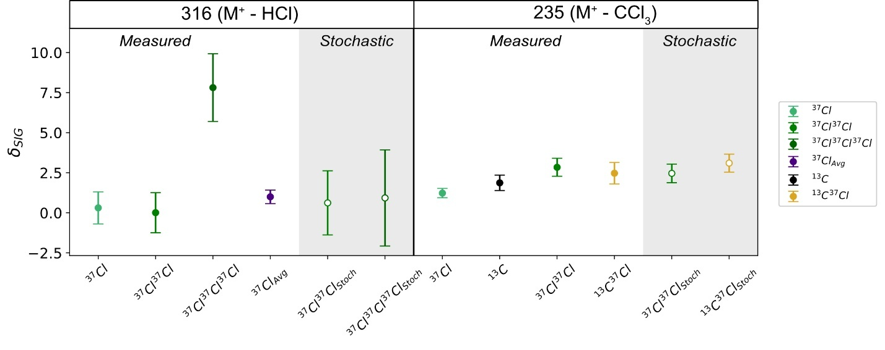
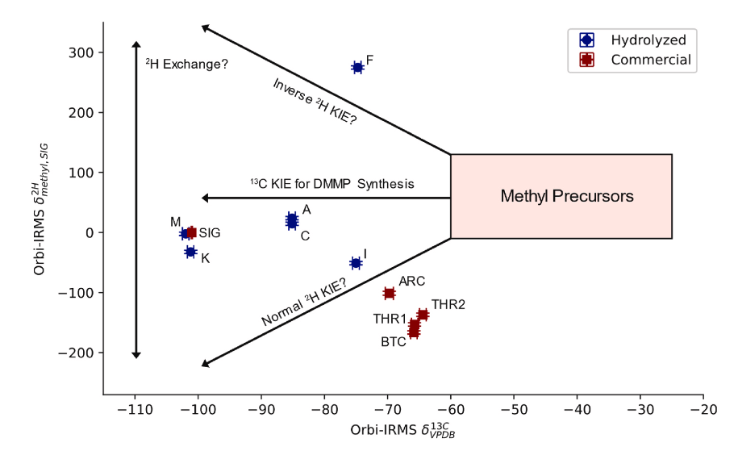
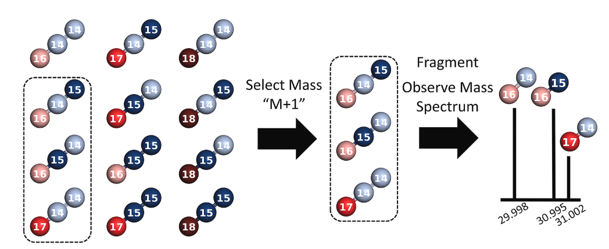
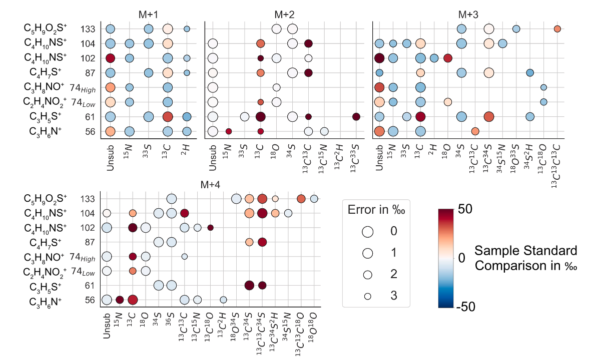
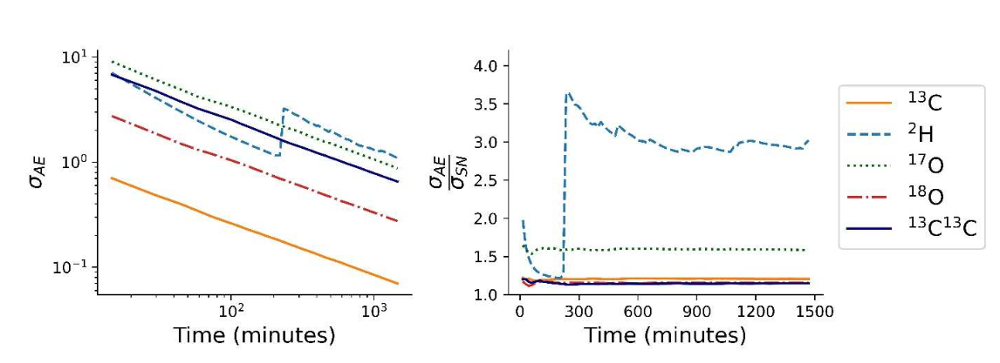

In the 1950s and 60s, the world’s largest producer of DDT operated in Los Angeles and dumped waste products from its manufacturing process off the coast of California. Growing concern about DDT’s effects on wildlife, notably featured in Rachel Carson’s Silent Spring, led to an end to DDT production in the early 70s. However, significant quantities of DDT remained in the sediments, and both DDT and toxic breakdown products are being released into the environment (e.g., appearing in sea lion blubber).
This project developed methods to study the isotopic content of DDT to trace it through the environment. The chemical processes which break down DDT impart characteristic isotope effects. This results in a chemical fingerprint that shows which processes are occurring and to what extent they have occurred. Our work measured the isotopic content of DDT in marine sediments, observing many elements simultaneously and at greater precision than previous techniques, and constraining the extent of DDT breakdown in these sediments. We hope that these tools can be used to track and understand the distribution of DDT, contributing to future remediation efforts.
Csernica, T., Eiler, J. M. & Sessions, A. L. Multi-isotope characterization of 4,4′-DDT isolated from sediment samples via Orbitrap-IRMS. Marine Pollution Bulletin (2026). doi:10.1016/j.marpolbul.2025.119185

Preventing the spread of chemical weapons requires technical strategies to trace their production, in order to enforce arms control treaties and to identify bad actors. Stable isotopes are a valuable tool for doing so because they record both the sources of feedstock chemicals and the specific reaction conditions encountered along a synthetic route.
I’ve applied stable isotope forensics to precursors associated with sarin, which is highly regulated but continues to be deployed. Here, we applied an Orbitrap-IRMS method to simultaneously observe the 13C and 2H content of the methyl group of sarin precursors (we first produce a safer byproduct, with no isotope effects, to aid sample handling). The combination of 13C and 2H measurements distinguished stocks more effectively, and with smaller sample sizes and less preparatory chemistry, than previous techniques. The methyl group we observed is typically derived from industrial methanol. Its 13C content is modified by a reaction producing an intermediate (dimethyl methylphosphonate) and the resulting 13C differs substantially across batches. The 2H shows even greater variance, possibly due to exchange reactions during the chemical synthesis, making the origins of this signature a good target for future study.
Csernica, T., Moran, J. J., Fraga, C. G. & Eiler, J. M. Simultaneous observation of ²H and ¹³C enrichment of methyl phosphonic acid via Orbitrap-IRMS, with applications to nerve agent forensics. Talanta (2025). doi:10.1016/j.talanta.2024.126802

Stable isotopes are a powerful tool for tracking a compound’s origin and fate, contributing to questions such as the date of the introduction of maize to North America, the source of atmospheric CO2, and the origin of Earth’s water. These successes have been achieved via measurements of small gases, such as H2 and CO2, which are amenable to precise measurement, typically via mass spectrometry. A typical organic molecule carries a significantly greater amount of isotopic information, as rare isotopes such as 13C and 2H may be enriched or depleted at specific atomic positions, while an individual molecule may have multiple such substitutions.
Recent experimental advances (see below) have enabled us to access more of this information, especially via mass spectrometry experiments which observe both an intact molecule and its fragments and measure the isotopic properties of all of these. However, these experiments are difficult to interpret, both because of the combinatorial explosion in number of isotopic forms (e.g., methionine has some 10 million isotopic versions) and due to the unclear manner in which these are sampled via multi-stage experiments.
In this project, I developed mathematical techniques for enumerating and tracking the isotopic versions of a molecule through experiments. I proposed a new way to report isotope ratios, as a ‘U’ value, comparing concentrations of substituted isotopologues with the isotopic form of a molecule with no rare substitutions (typically, isotope ratios are reported relative to the concentration of a single common isotope). The U value shows many benefits in computation because it places distinct measurements in a common reference frame, facilitating basic operations such as subtraction and multiplication. This reframing enables more rigorous data treatment, including the comparison of results from distinct fragmentation measurements. Using these results, I then derived analytical solutions to experimental designs which were previously treated numerically. Because the framework is generalizable, I hope to see it used widely as the mass spectrometry approaches become more widespread.
Csernica, T. & Eiler, J. M. High-dimensional isotomics, part 1: A mathematical framework for isotomics. Chemical Geology (2023). doi:10.1016/j.chemgeo.2022.121235

In a companion paper to the mathematics developed above, I implemented a measurement of 146 isotopic properties of a compound. Typical workflows in stable isotope geochemistry include a small number of variables, 1–5, which give the molecular-average content of single rare substitutions (e.g., 13C, 2H, or 15N). This project significantly expanded that number, while capturing multiple substitutions (e.g., 13C34S2H) and substitutions localized to specific positions in the molecule (e.g., 13Cmethyl13Cgamma34S).
I did so via a mass spectrometry strategy which isolated key subsets of the isotopic population, then fragmented this population. For example, the “M+2” experiment isolates only isotopic substitutions with a cardinal mass increase of 2, which could occur via a rare substitution with a mass increase of 2 (e.g., 18O or 34S) or multiple isotopes with a mass increase of 1 (e.g., 13C15N). After fragmentation, the resulting spectrum includes peaks without substitution when those substitutions are lost (i.e., occur in part of the molecule which is lost via fragmentation). The resulting dataset substantially increases the amount of information accessible via isotopic measurement, providing a way to gain unprecedented insight into a molecule and motivating the need for a better understanding of the drivers of isotopic composition (e.g., what controls the abundance of multiple substitutions in organic molecules?).
Csernica, T., Sessions, A. L. & Eiler, J. M. High-dimensional isotomics, part 2: Observations of over 100 constraints on methionine’s isotome. Chemical Geology (2023). doi:10.1016/j.chemgeo.2023.121771

The high-dimensional isotopic measurements discussed above required new analytical advances to become feasible. A major challenge here relates to ion counting: constraining an isotope ratio at a useful level of precision requires the analyst to observe a large number of ions (e.g., 1e6 instances of the rare isotope may be required). This requirement is demanding as the Orbitrap mass spectrometers we employ can observe a limited number of ions per second without degrading performance.
Therefore, we explored strategies for long-duration measurements, investigating instrument stability over durations of tens of hours. We found that this generally, but not always, tracked the shot noise limit. However, this internal measurement precision did not persist across sequences of measurements, which are required in Orbitrap-based strategies to standardize any sample measurements. The resulting precision for a series of measurements was typically significantly worse than the internal precision. This suggested that future efforts should aim at controlling inter-acquisition drift and reproducibility, which remains an ongoing issue.
Csernica, T., Bhattacharjee, S. & Eiler, J. M. Accuracy and precision of ESI-Orbitrap-IRMS observations via reservoir injection. Int. J. Mass Spectrom. (2023). doi:10.1016/j.ijms.2023.117084
Email: tacsernica [at] gmail [dot] com
Google Scholar: scholar.google.com/citations
GitHub: github.com/csernica